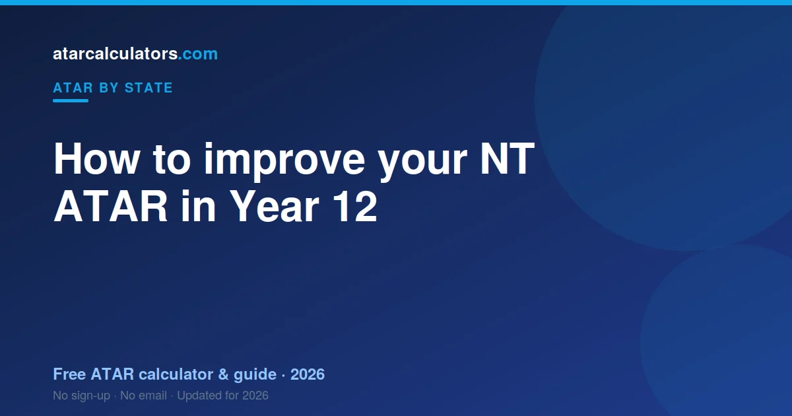

To improve your NT ATAR, focus on your rank within each Stage 2 subject, because ranking drives scaling. The NTCET is the SACE delivered in the Northern Territory, so Stage 2 is weighted heavily toward school assessment, your compulsory Research Project can count, and SATAC scales your best subjects into an aggregate. Choose subjects you can score highly in, sharpen your external assessments, and remember that adjustment points lift your selection rank, not your ATAR itself.
Key takeaways
- Your ATAR is not fixed until your final assessments.
- Focus on your rank within each Stage 2 subject — it drives scaling.
- The NTCET is the SACE delivered in the NT, scaled by SATAC.
- Stage 2 leans heavily on school assessment (around 70%).
- Your compulsory Research Project can contribute to your aggregate.
- Adjustment points lift your selection rank, not your ATAR itself.
- Sharpen your external assessments and exam technique.

Can you still improve in Year 12?
Yes. Your NT ATAR records where you finish, not where you started Year 12. Stage 2 is where the rank is decided, and it is decided by position rather than by history.
Why your rank matters most
Everything turns on your rank inside each subject. Scaling acts on that position, so lifting your standing in a subject is the only reliable way to lift what it contributes.
In small Territory cohorts your rank can move on a single assessment. That cuts both ways, and it makes tracking your position unusually worthwhile.
The NTCET and SATAC
In the Northern Territory you complete the NTCET, the Northern Territory Certificate of Education and Training. It runs on the SACE framework, and SATAC calculates the ATAR — the same arrangement South Australian students sit under.
That means the requirements are the same in substance: Stage 2 credits, literacy and numeracy, and the Research Project.
The school-assessment weighting
In Stage 2, most subjects weight school assessment heavily, commonly around 70 percent, with an external component making up the rest. So the year's work, not just the final exam, is where most of your result is built.
How the aggregate works
Your ATAR comes from a university aggregate built from your best scaled Stage 2 results: three counted in full plus half of a fourth, out of 90.
The Research Project
The Research Project is a compulsory Stage 2 subject in the NTCET, and it can contribute to your university aggregate. It is worth treating as a real subject rather than a box to tick, because a strong Research Project result can occupy a place in your counted results.
Choosing the right subjects
Subject choice matters, though the best subjects for your ATAR are the ones you can rank highly in. In the Territory that calculation runs alongside a practical constraint: what your school or distance provider actually offers.
Use scaling wisely
Scaling rewards strong cohorts, so higher maths and the sciences tend to scale well — our guide to how scaling works covers the mechanism. It only ever acts on your rank, though: a strong scaler you sit mid-pack in returns very little.
Your external assessments
Each Stage 2 subject includes an external assessment, such as an exam or an investigation, that contributes to your result. Preparing for it is not separate from your school work; it is the other end of the same subject.
Protect your strong subjects
Lifting weak subjects should never cost you your strong ones. With three subjects counted in full, your best results carry your aggregate, and losing ground there to rescue a fourth is a poor trade.
Adjustment and bonus points
Universities offer adjustment factors for certain subjects, equity circumstances and locations. Territory students should check each institution's scheme directly, since regional and remote provisions vary and are not automatic. Our selection rank calculator shows how they change the number universities actually rank you on.
Lift your weakest high-value subject
Not all improvement is equal. Extra marks in a subject already among your best are worth more than the same marks in one that will not make your counted results at all.
Make a simple plan
Spend an hour planning before adding hours of study. List your Stage 2 subjects, your current marks, and where you think you rank in each. If you are studying remotely, that written plan is doing the job a classroom would otherwise do.
Track your progress
Re-check your estimated ATAR as your marks move, so you can see whether the effort is landing. In small cohorts the picture changes quickly, so checking more often is reasonable — and there are more ways to improve a predicted ATAR if the number is not moving.
Model your NT ATAR
To plan your improvement, use our SACE ATAR calculator, which applies to the NTCET as well, since the Territory runs on the same framework.
Common questions
Can you still improve your ATAR in Year 12?
Yes. Your NT ATAR reflects where you finish, not where you start. Stage 2 is where your ATAR is decided, so focused effort across the year, especially on your best subjects, genuinely moves your ATAR.
Does subject choice affect your ATAR?
Yes, but the best subjects are the ones you can rank highly in. A strong rank in a subject that suits you beats a weak rank in a high-scaling subject you struggle with. Start from your strengths, then weigh scaling.
Do adjustment or bonus points raise your ATAR?
No, they do not change your ATAR itself. Adjustment points add to your selection rank for a specific university course, so the rank used to consider you can be higher while your ATAR stays the same.
How important is internal ranking?
Very. Scaling acts on your rank within each subject, and Stage 2 of the NTCET weights school assessment heavily, so your school marks set much of that rank. Ranking as high as you can in each subject is the most reliable way to lift your ATAR.